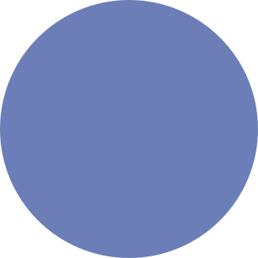
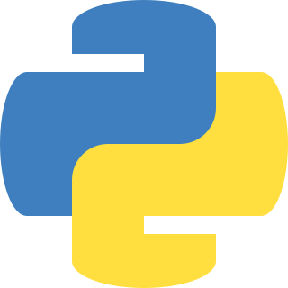
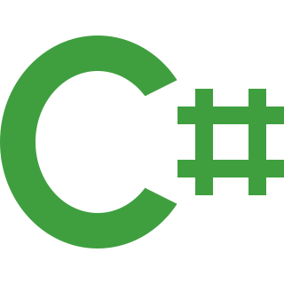

|
JavaScript |
é uma linguagem de programação amplamente utilizada para desenvolvimento web. Ela permite que os desenvolvedores criem interatividade e funcionalidade dinâmica em páginas da web. |
 |
Java |
é uma linguagem de programação de alto nível e uma plataforma de computação amplamente utilizada em todo o mundo. |
|  |
PHP |
é uma linguagem de programação amplamente usada para o desenvolvimento web. Ela é especialmente conhecida por ser usada no lado do servidor para criar páginas da web dinâmicas e interativas. |
|  |
Python |
é uma linguagem de programação de alto nível conhecida por sua simplicidade, clareza de sintaxe e versatilidade. |
|  |
C# |
é uma linguagem de programação desenvolvida pela Microsoft. Ela faz parte do ambiente de desenvolvimento .NET e é projetada principalmente para o desenvolvimento de aplicativos Windows, mas também é usada em outras plataformas. |
|
Elixir |
é uma linguagem de programação funcional e concorrente que foi criada com foco em escalabilidade, confiabilidade e facilidade de manutenção de sistemas distribuídos e de alto desempenho. |